ВАЗ 02101
ВАЗ 02101 — первый автомобиль Волжского Автозавода, вышедший с конвейера в 1970 году. Незадолго до этого советское правительство поставило план построить в стране еще один автомобильный завод для выпуска «народной» машины,
причем с готовностью привлечь к этому делу иностранных производителей. Выбор пал на Fiat 124 — эта итальянская модель в 1965 году стала «автомобилем года».
Подготовка технического проекта завода с отведенной площадкой в городе Тольятти была поручена концерну «Fiat».
Согласно контракту, на зарубежных специалистов возлагалось технологическое оснащение завода и обучение персонала.
Как вскоре выяснилось, в «чистом» виде модель не была приспособлена для тех климатических условий, в которых ей предстояло эксплуатироваться.
Целый год ушел только на адаптацию, чтобы автомобиль стал выпускаться уже в своем завершенном виде, как первая модель, ставшая родоначальницей семейства «Жигули».
Незадолго до этого советское правительство поставило план построить в стране еще один автомобильный завод для выпуска «народной» машины,
причем с готовностью привлечь к этому делу иностранных производителей. Выбор пал на Fiat 124 — эта итальянская модель в 1965 году стала «автомобилем года».
Подготовка технического проекта завода с отведенной площадкой в городе Тольятти была поручена концерну «Fiat».
Согласно контракту, на зарубежных специалистов возлагалось технологическое оснащение завода и обучение персонала.
Как вскоре выяснилось, в «чистом» виде модель не была приспособлена для тех климатических условий, в которых ей предстояло эксплуатироваться.
Целый год ушел только на адаптацию, чтобы автомобиль стал выпускаться уже в своем завершенном виде, как первая модель, ставшая родоначальницей семейства «Жигули».
ВАЗ-2102
Модификация первой ВАЗовской модели в кузове универсал появилась в 1971 году.  Соответственно, автомобиль получил обозначение ВАЗ-2102, а в народе назывался «двойкой» или «двушкой» по аналогии с седаном ВАЗ-2101,
для которого придумали прозвища «единичка» («однерка») или «копейка».
Конструктивно автомобиль является лицензионной копией универсала Fiat 124 Familiare (1966-1974), модернизированной под более сложные дорожные условия.
С учетом увеличенного внутреннего объема и более тяжелого кузова имеет усиленные пружины и амортизаторы,
обеспечивающие грузоподъемность в 250 кг с двумя пассажирами или 60 кг с пятью пассажирами.
Комплектовался универсал двигателями рабочим объемом 1,2 л (64 л.с.), 1,3 л (70 л.с.) или 1,5 л (77 л.с.)
Соответственно, автомобиль получил обозначение ВАЗ-2102, а в народе назывался «двойкой» или «двушкой» по аналогии с седаном ВАЗ-2101,
для которого придумали прозвища «единичка» («однерка») или «копейка».
Конструктивно автомобиль является лицензионной копией универсала Fiat 124 Familiare (1966-1974), модернизированной под более сложные дорожные условия.
С учетом увеличенного внутреннего объема и более тяжелого кузова имеет усиленные пружины и амортизаторы,
обеспечивающие грузоподъемность в 250 кг с двумя пассажирами или 60 кг с пятью пассажирами.
Комплектовался универсал двигателями рабочим объемом 1,2 л (64 л.с.), 1,3 л (70 л.с.) или 1,5 л (77 л.с.)
ВАЗ-2103
ВАЗ-2103 — более дорогая модификация ВАЗ-2101, и если «копейка» построена на базе Fiat 124, то в основу «тройки» легла концепция Fiat 124 Speciale, люксовой версии итальянского прототипа, но, конечно, со своими, оригинальными доработками и переделками, придававшими автомобилю визуальное
впечатление ощутимо более высококлассной и комфортабельной машины.
Первые образцы были собраны еще в 1972 году, но серийное производство новой модели началось только в 1973 году. С точки зрения эргономики и дизайна,
по сравнению с ранее созданным ВАЗ-2101,
изменения в ВАЗ-2103 делали этот автомобиль более элегантным и стильным, плюс ко всему,
он обладал рядом прогрессивных технических решений.
На протяжении двенадцати лет производства с конвейера было выпущено 1 304 899 этих автомобилей. До появления «шестерки»
ВАЗ-2103 считался самой комфортной и престижной моделью ВАЗа.
люксовой версии итальянского прототипа, но, конечно, со своими, оригинальными доработками и переделками, придававшими автомобилю визуальное
впечатление ощутимо более высококлассной и комфортабельной машины.
Первые образцы были собраны еще в 1972 году, но серийное производство новой модели началось только в 1973 году. С точки зрения эргономики и дизайна,
по сравнению с ранее созданным ВАЗ-2101,
изменения в ВАЗ-2103 делали этот автомобиль более элегантным и стильным, плюс ко всему,
он обладал рядом прогрессивных технических решений.
На протяжении двенадцати лет производства с конвейера было выпущено 1 304 899 этих автомобилей. До появления «шестерки»
ВАЗ-2103 считался самой комфортной и престижной моделью ВАЗа.
ВАЗ-2104
Серийный выпуск автомобиля ВАЗ-2104 («четвёрки») был начат на Волжском автомобильном заводе во второй половине 1984 года.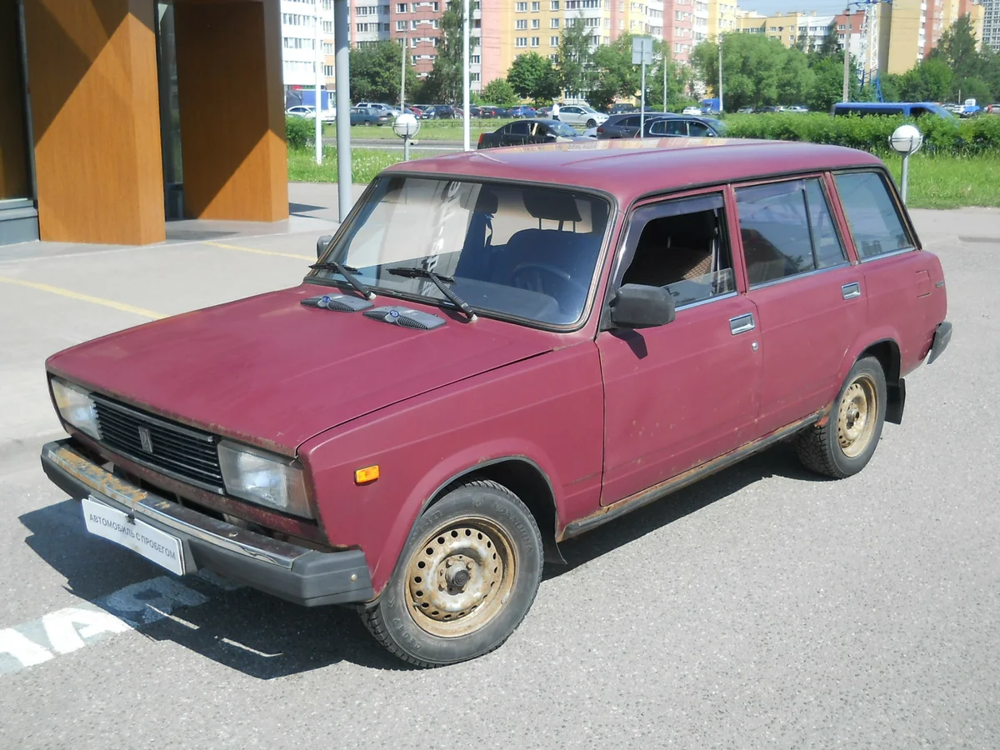
Параллельно с новой моделью выпускали аналогичный по классу автомобиль ВАЗ-2102 («двойка»), который к апрелю 1985 года был полностью вытеснен с конвейера.
От автомобиля-«донора» «четвёрке» достался ряд оригинальных деталей, касающихся задней части авто.
При создании этой модели конструкторы руководствовались важной особенностью того времени: создание новой модели с
минимальными затратами на производство и максимальным потребительским эффектом.
Поэтому за основу была взята модель ВАЗ-2105. После удлинения крыши появились выштамповки для усиления жёсткости.
Такая конструкция кузова позволяет разместить на крыше длинный багажник,
перегружать который не рекомендуется, так как расчётная жёсткость кузова универсала значительно ниже, чем у седана.
Задняя дверь открывалась вверх, на ней было применено абсолютно новое решение — обогрев заднего стекла и
стеклоочиститель, — до 1994 года использовавшееся только в производстве автомобилей,
шедших на экспорт,
а затем вошедшее в стандартную комплектацию.
В конце 1990-х годов несколько лет выпускалась «улучшенная» модификация ВАЗ-21043-20, оснащённая пятиступенчатой коробкой передач, рейлингами на крыше,
электрооборудованием и салоном с анатомическими передними сиденьями от ВАЗ-2107.
ВАЗ-2105
История ВАЗ-2105 началась в октябре 1979 года, когда с конвейера Волжского автомобильного завода сошла первая «пятерка».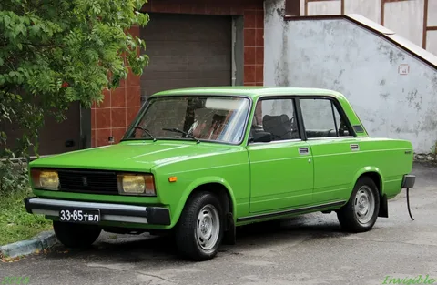
Полномасштабное производство началось уже в январе следующего года. Автомобиль по сути представлял
собой следующую стадию основательной модернизации модели ВАЗ-2101 («копейка» — первый автомобиль,
который ВАЗ начал выпускать в апреле 1970 года).
Четырехдверный заднеприводный («классика») седан ВАЗ-2105 стал одним из самых дешевых автомобилей Тольяттинского автозавода и
комплектовался только самыми необходимыми органами управления и средствами комфорта.
Из-за доступности автомобиль пользовался стабильным спросом.
На его базе были построены «люксовый» седан ВАЗ-2107 и универсал ВАЗ-2104. В 2005 году Волжский завод ввел новую систему наименований
продукции и ВАЗ-2105 переименовался в Лада-2105.
После прекращения в 2008 году выпуска бюджетной малолитражки Ока «пятерка» и вовсе стала самым дешевым автомобилем на российском рынке.
ВАЗ-2106
ВАЗ-2106, или «шестерка», стала одним из самых массовых и популярных отечественных автомобилей, можно сказать, легендой отечественного автопрома.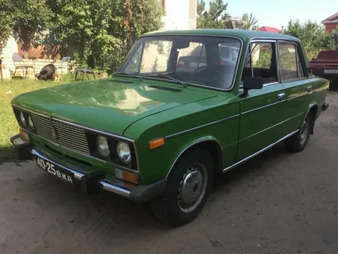
В декабре 1975 года с конвейера Волжского автомобильного завода сошел первый ВАЗ-2106 — фактически рестайлинговая версия
ВАЗ-2103 с кузовом типа седан и задним приводом.
Модернизация «тройки» должна была попутно снизить расходы на производство за счет уменьшения использования дорогостоящих хромированных деталей,
но с другой стороны, были приняты решения,
позволившие значительно омолодить облик автомобиля и сохранить его престижность.
Изменениям подверглись передняя облицовка, задняя панель багажника, бампера, колпаки колес, боковые указатели поворотов, вентиляционные решетки.
Сохранились «фирменные» боковые молдинги, как будто подчеркивающие более сильный вид. Кроме того,
в автомобиле появились оригинальные задние фонари — указатели поворотов, габаритных огней,
стоп-сигналов и огней заднего хода объединены в одном корпусе и конструктивно скомбинированы с освещением номерного знака.
ВАЗ-2107
ВАЗ 2107 — легковой, пятиместный, четырехдверный, с цельнометаллическим несущим кузовом седан.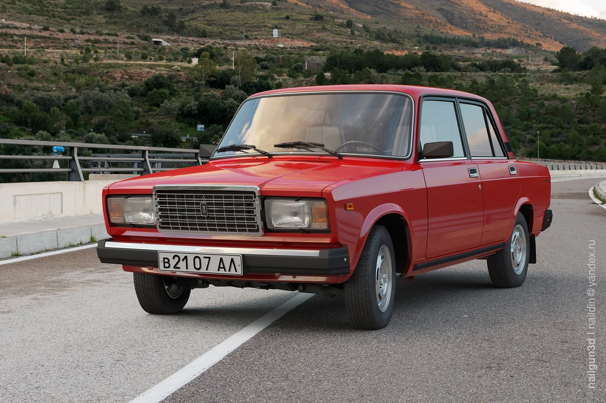
Автомобиль представляет собой модифицированный люксовый вариант на основе базовой модели семейства — ВАЗ 2105.
Первый автомобиль этой модели сошел с конвейера автозавода еще в 1982 году.
В других странах ВАЗ-2107 продавался под названиями Lada Nova, Lada Riva, Lada 1500. Начиная с 2001 года ОАО «АВТОВАЗ» стал выпускать две модификации ВАЗ 2107.
Это модели 21070 и 21074, которые различаются своей комплектацией. Первая — автомобиль в его классическом варианте с полуторалитровым мотором.
Вторая модификация — 21074 — более современная модель с двигателем 1,6 литра, которая,
в свою очередь выпускалась в комплектациях «норма» (21074-01) и «люкс» (21074-02).
ВАЗ-111
«Ока» стала результатом совместной работы ВАЗа и конструкторов Серпуховского мотосборочного предприятия,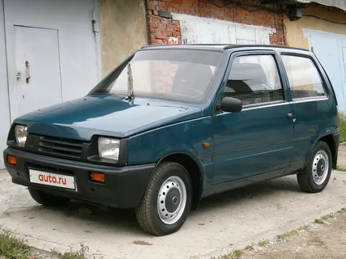
которое в советское время специализировалось на производстве транспортных средств для людей с ограниченными возможностями.
Впрочем, автомобиль, который первоначально задумывался в качестве замены прежним морально устаревшим «инвалидкам»,
на деле оказался интересным и для значительной массы обычных потребителей.
Первые опытные экземпляры были выпущены в 1982 году,
а к середине 80-х, в результате многочисленных изменений и доработок, автомобиль приобрел уже привычные черты. Серийное производство началось в 1987 году.
Покупатели «Оки», цена которой составляла на тот момент всего 2400 рублей, смогли оценить достоинства этой микролитражки.
Дешевая и практичная, малогабаритная, но довольно вместительная — «Ока» обладала всеми задатками «народного автомобиля»,
так что автомобилю был обеспечен устойчивый спрос.
Ока в длину вытянута на 3200 мм, в ширину — на 1420 мм, в высоту — на 1400 мм.
ВАЗ-2108
ВАЗ-2108 начал выпускаться серийно на Волжском автомобильном заводе с конца 1984 года.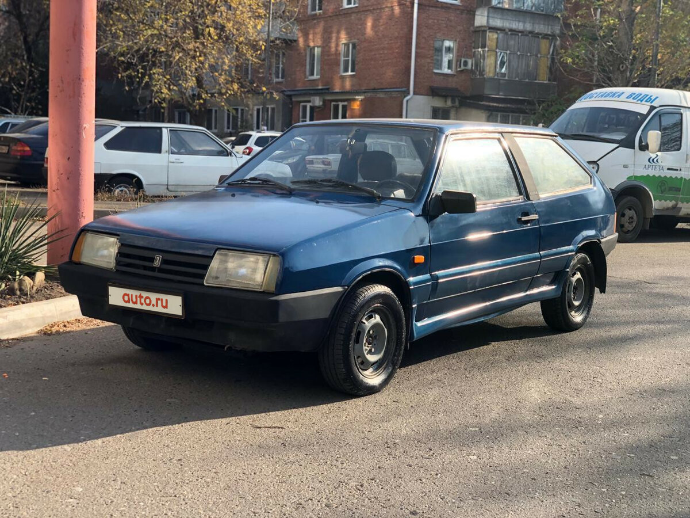
Автомобиль представлял из себя переднеприводный трехдверный хэтчбек, который впоследствии стал базовой моделью
в семействе Лада «Спутник» (экспортное название — Lada Samara).
Очевидные преимущества в сравнении с заднеприводными «жигулями» заключались в отличной динамике, скоростных качествах,
хорошей управляемости и устойчивости на дорогах с различным покрытием.
Автомобиль был не просто новым, но совершенно новым «во всем»: это и уже упомянутый передний привод,
и поперечное расположение силового агрегата, а также новая передняя подвеска типа Макферсон,
сцепление с тросовым приводом, бесконтактная система зажигания, пластиковые бамперы, реечное рулевое управление,
непривычная форма сидений (понятно, более комфортных и удобных).
Автомобиль очень быстро завоевал сердца советских автолюбителей.
ВАЗ-2109
ВАЗ-2109 принадлежит семейству Лада Самара (Спутник) и является 5-дверной модификацией ВАЗ-2108 с кузовом типа хэтчбек.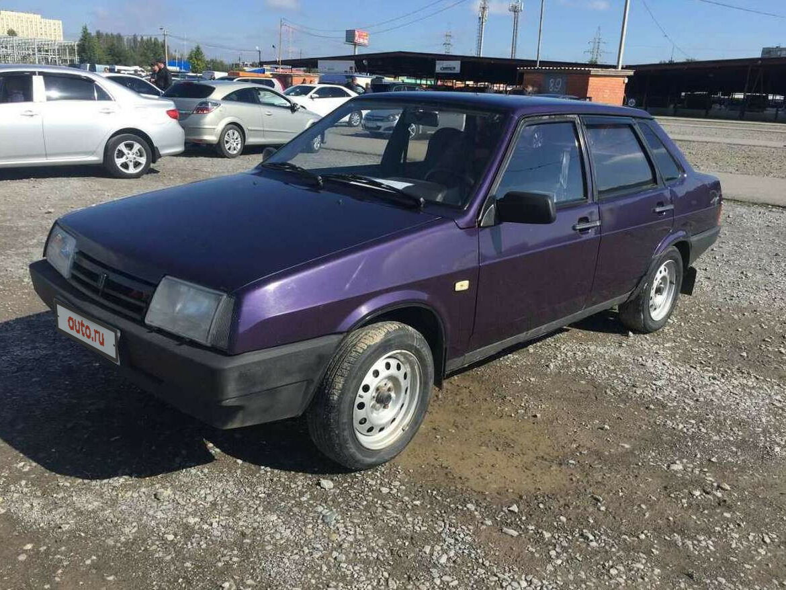
Автомобиль имеет укоренившееся неофициальное название — «девятка».
По сравнению с другими автомобилями, выпускавшимися в СССР, семейство «Самара» являло собой значительный прогресс и в техническом плане, и по части комфорта.
Известно, что над доводкой отдельных узлов и агрегатов автомобиля советские специалисты работали совместно с конструкторами фирмы «Порше»,
сотрудничество с которыми на ВАЗе было открыто еще с 70-х годов.
Хэтчбек начали выпускать в 1987 году на Волжском автомобильном заводе, поначалу в версиях с 1,1- и 1,3-литровым двигателями.
В 1990 г с конвейера сошла обновленная модификация 21093 с более мощным полуторалитровым мотором.
Эти автомобили комплектовались более современной приборной панелью. Выпуск «девятки» на заводе продолжался до 2006 года,
после чего машина была заменена моделью ВАЗ-2114.
ВАЗ-2110
Первые работы над автомобилем ВАЗ-2110 начались еще в 80-х годах — макет появился в 1983 году, а прототип был создан в 1984 году!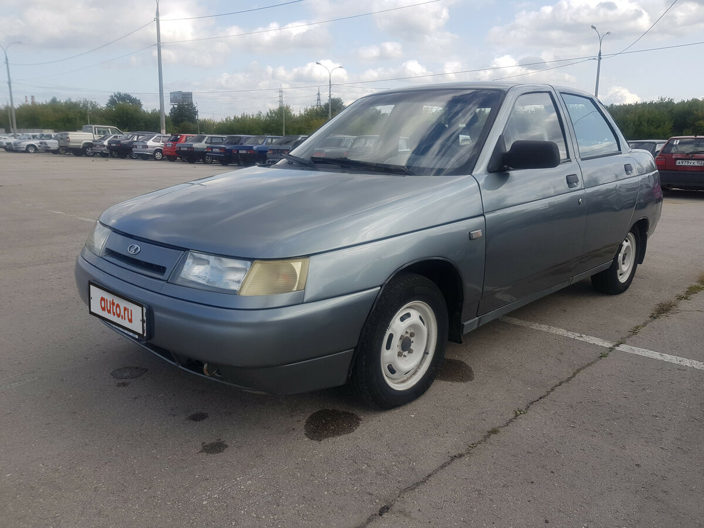
Но тогда разработка была отложена в угоду более реального развития проекта «Самара».
И хотя работы над машиной, которая могла бы стать флагманом модельного ряда ВАЗ и родоначальником нового поколения автомобилей переднеприводного типа,
продолжали вестись, только в 1992 году появился первый опытный экземпляр.
Внедрению его в производства помешали экономические обстоятельства. Серийное производство началось в 1996 году.
Автомобиль, открывший собой семейство «Lada 110» выгодно отличался от других отечественных машин данного класса современным дизайном и интерьером,
просторным салоном и улучшенными эксплуатационными характеристиками.
Лада 2111
Лада 2111 — первый переднеприводный вазовский универсал. 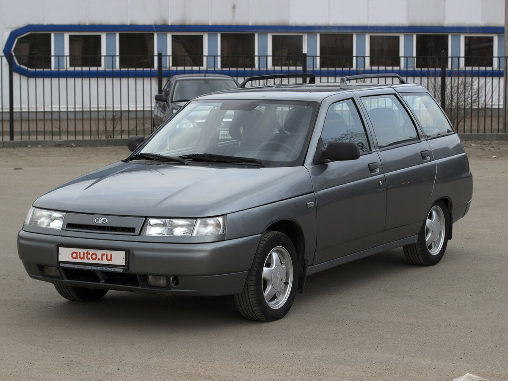
Он впервые сошел с конвейера в 1998 году. Универсал сохранил все технические преимущества «десятки»,
но при этом приспособлен к перевозкам небольших грузов, а просторный салон и вместительное багажное отделение позволяют использовать автомобиль в качестве
удобного транспортного средства для путешествий на природу или поездок за город.
По сравнению с «десяткой» заметно удлинен кузов машины. Также она стала несколько выше, что тоже увеличило грузовместимость. На крыше установлены рейлинги,
что дает возможность перевозить на верхнем багажнике груз весом до 50 кг.
Впервые в отечественном автомобиле использованы очень удобные задние сиденья: в отличие от прежних отечественных универсалов,
у Лада 2111 спинку заднего дивана можно разложить по частям (1:2),
как это принято на большинстве современных иномарок, благодаря чему сзади можно разместить и груз, и пассажира.
Приличный объем багажного отсека — 490 литров — может увеличиваться до 1420 л. Общая грузоподъемность автомобиля
500 кг — это немного выше, чем у ВАЗовской «четверки».
ВАЗ-2112
ВАЗ-2112 (он же LADA 112 Coupe) — этот хэтчбек является симбиозом ВАЗ-2110 и 2111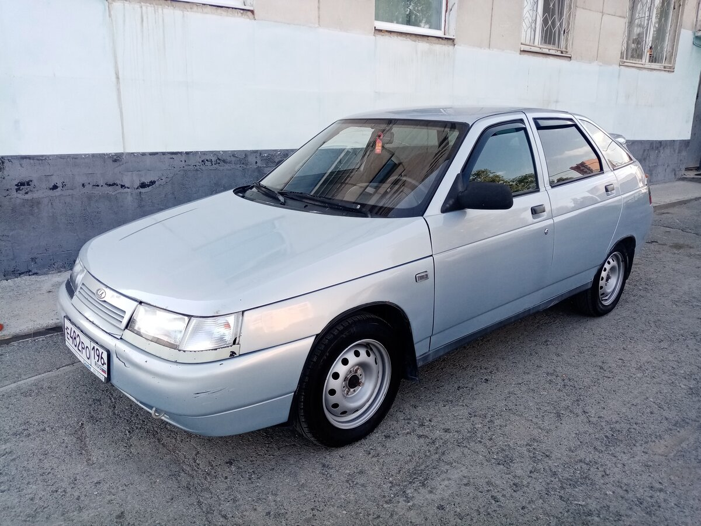
Выпускался с 1998 по 2008 год. Производство модели началось с февраля 1998 года с укороченным
(по сравнению с ВАЗ-2110) до 4170 мм кузовом (объём багажника 400 л),
за счёт чего у машины более чёткие реакции на поворот рулевого колеса.
Длина кузова у ВАЗ 2112 меньше чем у ВАЗ-2110, но вместительность при этом больше (за счёт увеличенного багажного отделения)
ВАЗ-1117
ВАЗ-1117 или LADA Kalina 1 — пятидверный универсал
Имеет зауженный перед и мощную заднюю часть с крупной крышкой багажника. Но переходы между разными частями авто плавные,
поэтому машина в целом смотрится гармонично.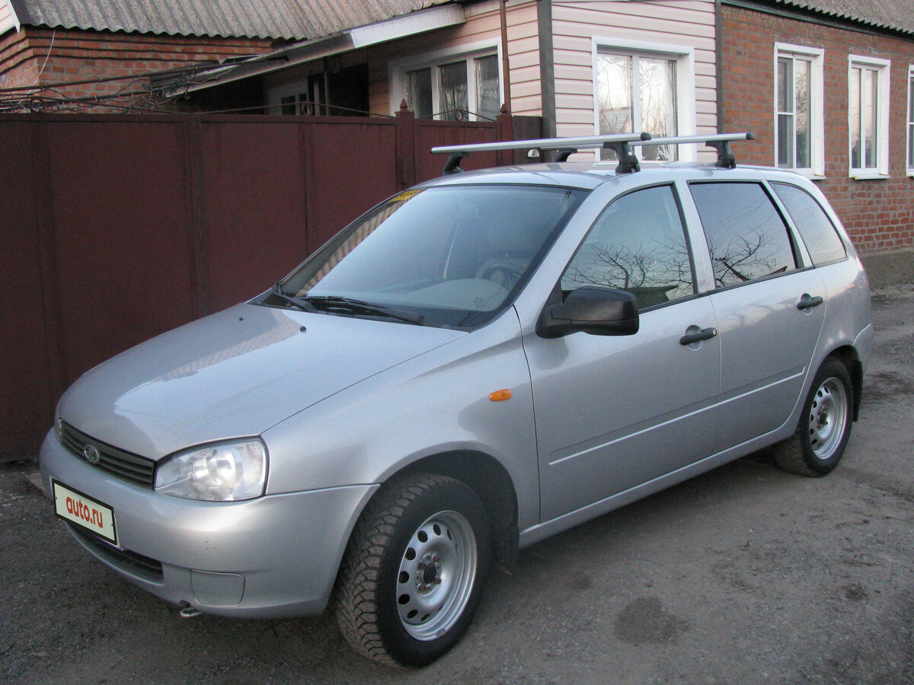
LADA Kalina — семейство российских автомобилей малого класса. Выпускалось с 18 ноября 2004 года по 2018 год.
Первая серия LADA Kalina производилась до 1 марта 2013 года.
Лада Калина
В 1993 году АвтоВАЗ начал разработку автомобиля, который в 1998 году получил название «Лада Калина».
Готовый же прототип новой модели в четырехдверном кузове продемонстрировали только в 2000 году,
а непосредственно с конвейера ОАО «АвтоВАЗ» первый седан Лада Калина сошел только 18 ноября 2004 года.
Такая временная задержка привела к тому, что Калина фактически устарела еще до того, как началось ее производство.
Однако в работе над автомобилем использовалось математическое моделирование, а производство частей, 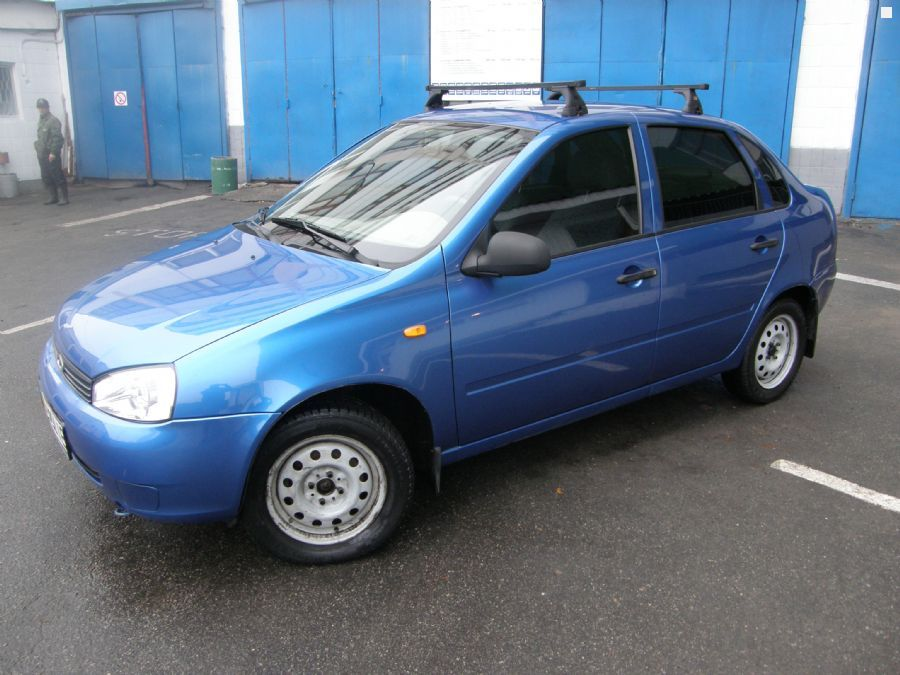
их сварка, окраска, сборка поднялись на радикально высокий качественный уровень в сравнении с остальной продукцией завода.
Дальнейшее развитие модельного ряда ознаменовалось выпуском машин с новым двигателем объемом 1,4 литра и появлением автомобилей в кузовах хэтчбек и универсал,
а также спортивной версии и установкой более мощного 16-клапанного 1,6-литрового двигателя.
Если в 2005 году завод собрал 40000 автомобилей, то в 2009 году было реализовано 60746 автомобилей, в результате чего
Лада Калина становится одной из самых популярных моделей в России.
1 мая 2011 года пресс-служба АвтоВАЗа заявила, что завод прекращает выпуск автомобиля Лада Калина в кузове седан,
заменив его новым бюджетным автомобилем Лада Гранта.
1 марта 2013 было прекращено производство Лада Калина первого поколения в связи с модернизацией конвейера для производства автомобиля второго поколения.
ВАЗ-1119
Задняя часть этой модели выглядит неприметно, так как выделить на ней можно разве что массивную крышку багажника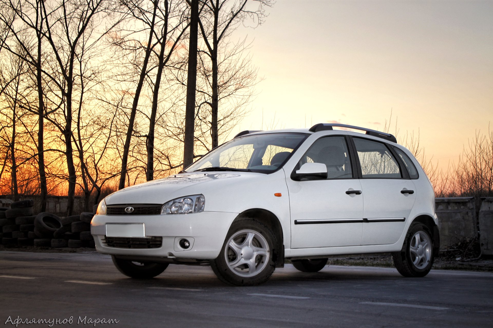
ВАЗ-1119 (2006–2013)
Кузов ВАЗ-2119 оформлен в том же стиле, что и у ВАЗ-1117
Читайте также: Гидроусилитель руля на ваз 2107 – как поставить, замена и ремонт
ВАЗ-1119 или LADA Kalina хэтчбек — кузов этой модели оформлен в том же стиле, что и у ВАЗ-1117.
Бампер округлой формы, багажная крышка небольшая и имеет максимальную площадь остекления.
Задние фонари скомпонованы вертикально и более вытянуты по форме, чем у универсала и седана.
Эта модель кажется самой аккуратной среди своих собратьев в семействе LADA Kalina, хотя её длина всего на на 190 мм меньше,
по ширине и высоте и вовсе никаких различий нет
Сходства автомобилей
Не сказать, что обе машины являются братьями-близнецами – различия во внешнем виде у них все же есть.
Но сопоставив такие характеристики как: длина и ширина кузова (у обоих 4,1 и 1,6 м, соответственно),
дорожный просвет (175 мм), колесную базу (2,4 м), массу автомобилей (1045 кг у «шестерки» и 1049 кг у седьмой модели),
радиусы дисков и резины, объем бака (39 л.) и мощности двигателей,
мы поймем, что машины являются практически одинаковыми.
Что и понятно, так как они обе сделаны на одной базе и принадлежат к одному и тому же семейству усовершенствованных Fiat 124.
Большая часть запчастей у обоих автомобилей унифицирована.
Обе машины в свое время считались престижными моделями в гамме «Жигулей», так как на фоне остальных от ВАЗ-2101 до ВАЗ-2105 имели повышенную комфортабельность.
На верх